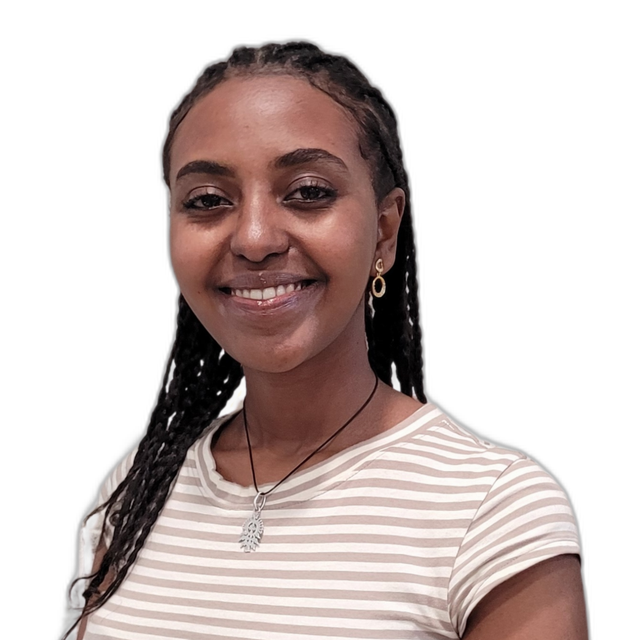
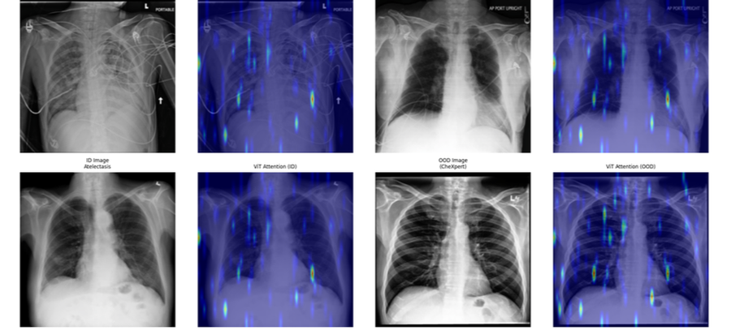
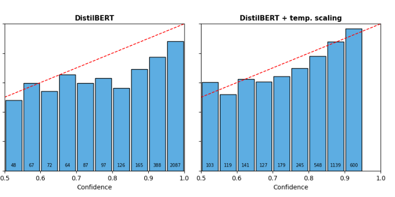

Sosna Worku Achamyeleh
MS student in Artificial Intelligence and Machine Learning at The George Washington University, where I work on the reliability and interpretability of vision and multimodal models. Black in Robotics + 3M Tuition Fellow. Previously BSc in Software Engineering at Addis Ababa University.
I am applying to PhD programs for Fall 2027.

Updates
- Oct 2026Preprint on benchmarking classical and transformer NLP models for stress detection is on arXiv.
- Sep 2026Started my master's thesis with Xiaodong Qu on reliability and explainability of vision and brain foundation models for EEG.
- Apr 2026Presented a poster at the GWU SEAS Research and Development Showcase.
Research
I study whether deep learning models stay reliable when the data they meet no longer looks like the data they were trained on. My work asks what happens to calibration, uncertainty, and explanation quality under distribution shift, across medical imaging and EEG. I am interested in vision foundation models, multimodal learning, and representation learning.
Publications

Reliability and Explainability of Vision Transformers Under Medical Distribution Shift
MICAD 2026, under review
ViTs beat CNNs in distribution but degrade faster under shift, calibration fails for both, and GradCAM and attention rollout localize poorly exactly when the explanation matters most.

Benchmarking Classical and Transformer-Based NLP Models for Stress Detection
Preprint, 2026
DistilBERT reaches 0.793 macro F1 on Dreaddit against classical baselines, evaluated across six stratified splits with McNemar, Wilcoxon, and Nadeau-Bengio tests.
Other Work
Face-Selective Visual Information and Deep Network Ablation
Neuromatch Academy, 2026
Voxel-wise encoding models linking pretrained vision features to fMRI responses from Algonauts 2021, comparing AlexNet and a face-specialized ResNet-50 under targeted unit ablation.
Threat Detection in Spoken Amharic
Addis Ababa University, 2024
Built and annotated a 5,800-clip Amharic speech dataset and compared CNN, RNN, and LSTM models on MFCC and spectral features for real-time threat classification.
Experience
- 2025Software Developer, Phoenixopia Solutions PLC, Addis Ababa
- 2024–2025Task Lead, Machine Learning, Omdena San Jose Chapter. Led 25 junior engineers on cardiovascular risk modeling with NHANES data.
- 2023Software Engineer Intern, Escalate Africa Software Development S.C., Addis Ababa
Teaching and Leadership
- 2025Assistant Lecturer, Computer Programming, Addis Ababa University
- 2023–2025Head of Communications Education, Africa to Silicon Valley. Trained 205 students from 20+ African countries.
- 2024Teaching Assistant, Data Structures and Algorithms, AddisCoder. Supported 99 high school students.
- 2024Back-end Instructor, Ethioware EdTech Initiative. Trained 54 women across several African countries.
Awards
- 2025Black in Robotics + 3M Tuition Fellowship One of two awardees nationally for 2025–26 announcement
- 2024Best Poster Presentation Team award, Addis Ababa University Research Week certificate
- 2023Aspire Leaders Program Top 2% finalist, 2023 cohort certificate
- 2021Huawei Seeds for the Future Top 40 students in Ethiopia certificate
Education
- 2025–2027MS, Artificial Intelligence and Machine Learning, The George Washington University. GPA 3.78.
- 2019–2024BS, Software Engineering and Computing Technology, Addis Ababa University. GPA 3.62, Great Distinction.
- 2026Deep Learning Course, Neuromatch Academy
Contact
Happy to hear from prospective collaborators and PhD programs. Reach me at sosna.achamyeleh@gwu.edu.